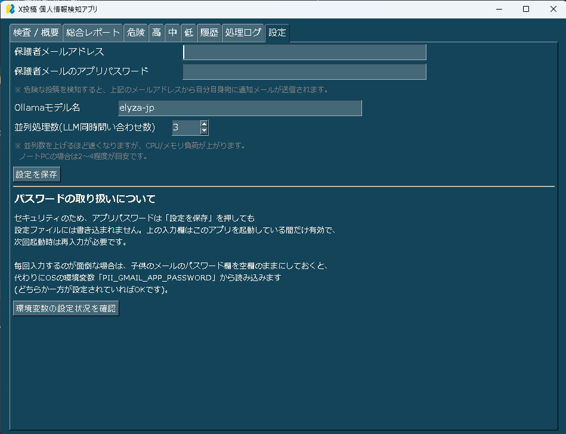
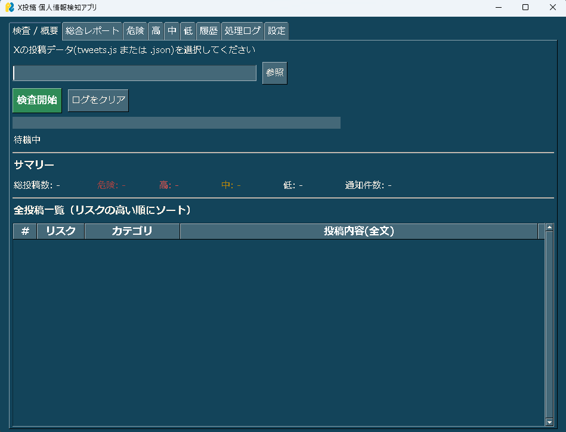
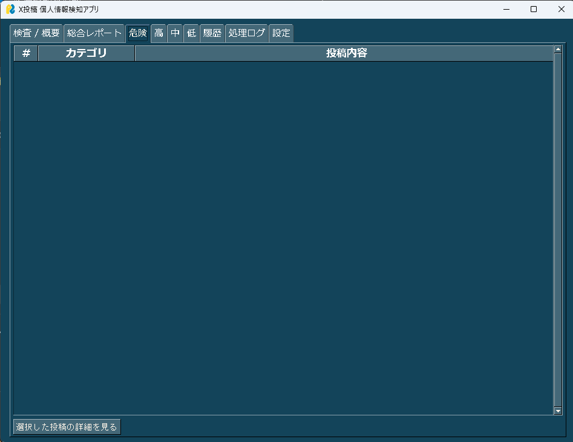
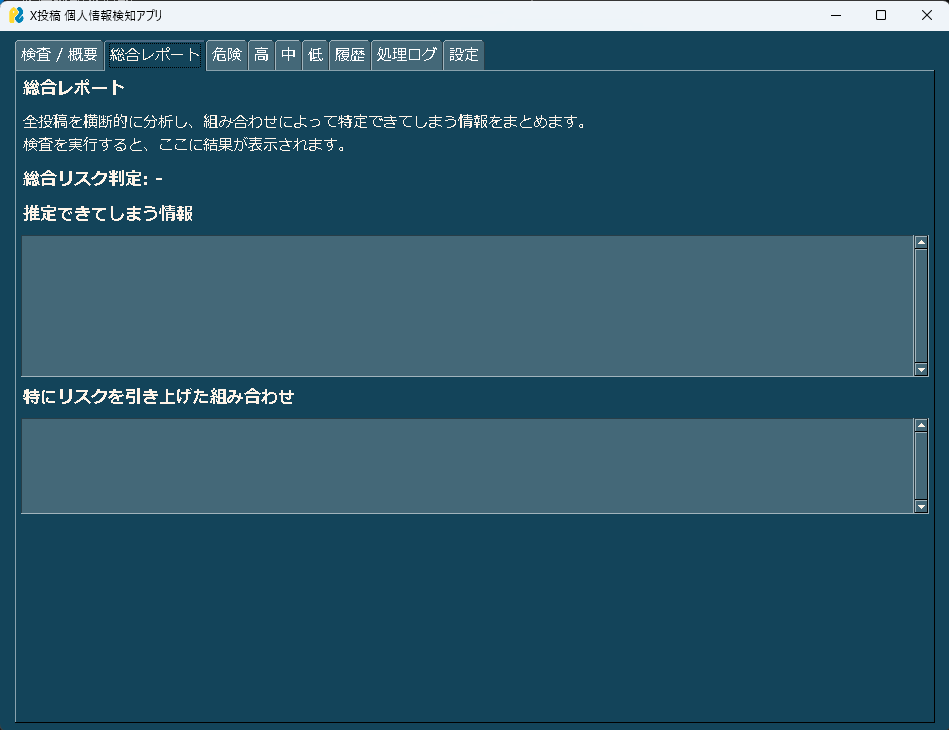

ポストチェッカーの利用方法
ポストチェッカーを使用するための手順を説明します。
① Windows PowerShellを起動
Windows PowerShellを起動し、 「ollama-models」フォルダへ移動します。
cd C:\Users\ユーザ名\ollama-models② プログラムを起動
以下のコマンドを入力してプログラムを実行します。
python pii_detector_app_ver14.py③ 送信メールアドレスを設定
送信メールアドレスには、 2段階認証を設定したGoogleアカウントのメールアドレスを入力してください。

④ パスワードを設定
パスワードには、Googleアカウントで作成した アプリパスワード を入力してください。
通常のGoogleアカウントのパスワードではなく、 アプリパスワードを使用してください。
⑤ 使用するデータを設定
ポストチェッカーでチェックするデータを設定してください。

使用するデータを設定したら、設定内容を確認して利用を開始してください。
⑥ 選択した投稿の詳細を確認
左下の「選択した投稿の詳細を見る」を押すと、 なぜその投稿が危険なのかを確認することができます。

⑦ 総合レポートを確認
総合レポートでは、すべての投稿を評価した結果が記載されています。
